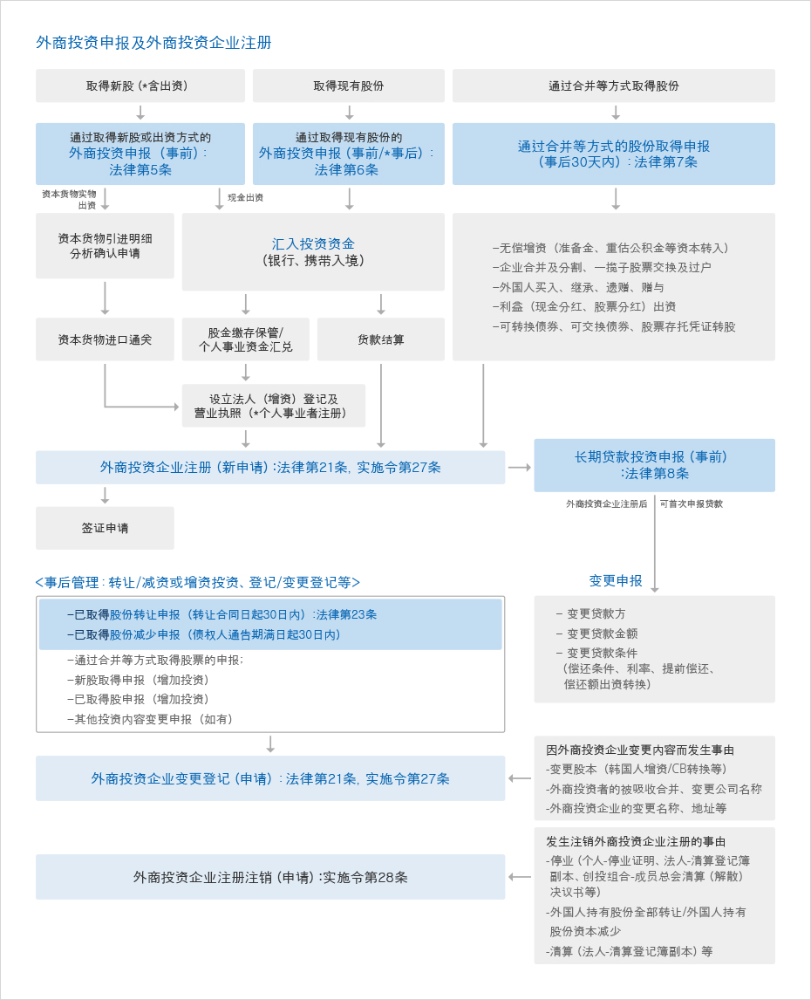

投资申报及注册
- Home
- 投资指南
- 投资程序
- 投资申报及注册
外商投资申报
外商投资者（代理人）可在 Invest KOREA 或者 KOTRA 国内贸易馆及海外投资分社贸易馆、国内外汇银行总分行、其它被指定的外国银行国内分行进行外商投资申报。
- 申报人 : 外商投资者直接申报或者由代理人申报
- 申报接受机关 : 国内银行总分支行、外国银行国内分行、Invest KOREA 或 KOTRA 国内贸易馆及海外投资分社贸易馆
- 申报处理时间 : 及时（当场交付申报证）
外商投资申报制度在 1993 年 3 月后被制度化，外商投资申报分为在获得类型股份等之前已经申报的事前申报，和获得股份或签定合同后进行投资申报的事后申报。有关类型和细分内容如下
事前申告和事后申报
| 区分 | 申报项目 | 备注 |
|---|---|---|
| 事前申报 | 因获得新股等的外商投资申报及投资内容变更申报 | |
| 因获得原有股份等的外商投资申报及投资内容变更申报 | 作为例外，允许事后申报的情况下，在进行申报时， 必须在取得日后30天内进行申报 | |
| 依据长期贷款方式的外商投资申报及投资内容变更申报 | ||
| 事后申报 | 通过合并等取得股份的取得申报
|
必须在自取得之日起30日以内申报 |
| 股份等的转让申报 | 自合同签定日起 30 日以内 | |
| 股份等的减少申报 | 应在商法第439条所规定的对债权者催告期间终了日起30天内进行申报 | |
| 外商投资企业注册, 变更注册, 注销申请 |
提交材料
- 不同类型（新股、原股、长期贷款等）的外商投资申报书 2 份
- 证明外国人国籍的材料（外国人的国籍证明书）
- 外国人是法人或者团体的情况下：有关国家的政府或其它有权机关所发行的登记簿誊本，或者可证明有关法人或团体所在国家的材料
- 外国人是个人的情况下：有关国家的政府或者其它有关机权所发行的市民权证明书、护照等可证明国籍的材料
- 但是，外国投资者如果保有大韩民国国籍的情况下，可以用所停留的国家政府或其它有权机关所发行的永居权证明书，或者大韩民国在外公馆长官所发行的在外国民登记证明书来代替。
必要时，追加的附加文件
- 关于出资目的物的凭证材料
- 其它与股份取得相关证明的材料
- 委托书（基于被赋予外国投资者的代理权，该代理人进行申报、许可申请等）
不同类别外国人投资申报程序
取得股份的外商投资申报
- 当外商欲以取得大韩民国国民（法人）运营企业所新发行股份的方式来进行外商投资时，必须事先进行投资申报（事前申报）。
- 取得新股
- 外国人单独或者和国内人合作成立新法人的情况
- 参与国内企业的有偿增资的情况
- 外国人在国内运营个人事业体的情况
- 向非经营法人捐赠的情况（捐赠方式为取得新股）等以上 4 种情况。
需提交的材料
- 取得新股的外商投资申报书 2 份（代理申报时，包括委托书）
- 外国投资者的国籍证明书
- 其它有关出资目的物的必要材料（只限于相关的情况下）
- 产业财产权等价格评价证明材料
- 根据分支或者办事处、法人的清算所剩余财产的证明材料
- 贷款等其它从海外借入金额数的证明材料
- 外国有价证券市场上市法人的股份证明材料
- 依据《外商投资促进法》或者《外汇交易法》，外国人所持有的股份证明材料
- 对想要出资的国内不动产的资本交易申报证明材料
- 根据《外商投资促进法》或者《外汇交易法》，可证明所持有的股份或者不动产销售金额的材料
在已经申报的内容中，如果想要变更外国投资者的商号、名称、国籍、外商投资金额、外商投资比率（外商投资企业的股份中外国投资所持有的股份比率）、投资方法以及想要经营的事业时，必须做内容变更申报。
取得原有股份的外商投资申报及许可申请
外国人通过取得大韩民国国民（法人）所经营企业已经发行的股票等，来进行外国人投资的情况下，必须做投资申报（事前申报）。但是，取得依据《证券交易法》的股权上市法人或者 KOSDAQ（韩国场外股票市场）法人所发行的原始股的情况下，取得后30天内可以进行申报。
※ 外国人根据证券交易法，曾获得有价证券市场上 9% 股票的状态下，如果追加取得 3.5% 股票的话（总股票取得比率在 10% 以上（包括 10%）的情况下），由于根据《外商投资促进法》，对追加取得的 3.5% 的股份可以被认定为外商投资，所以必须做取得原始股的外商投资申报（或者许可申报）。这种情况被视为事前申报原则的例外，所以可以在取得后 30 天内进行申报。
取得原始股
- 非上市股票的外国投资者和国内股东间直接交易的情况
- 获得在有价证券市场或者 KOSDAQ 市场上市企业股票 10% 以上（包括 10%）的情况
取得经营防御产业的企业的原始股，并想要进行外商投资时，必须事先获得产业资源部长官的许可。如果有违反许可规则取得原始股的情况时，不能行使所取得的相关原始股的表决权，还可能会收到产业资源部长官发的股份转让命令。
需提交的材料
- 取得原始股的外商投资申报书 2 份（代理申报时，包括委托书）
- 外国投资者的国籍证明书
- 可以确认和二手人之间特殊关系的材料（二手人是 2 人以上的情况）
- 其它有关出资目的物的必要材料（只限于相关的情况）
- 根据分支或者办事处、法人的清算所剩余财产的证明材料
- 贷款等其它从海外借入金额数的证明材料
- 外国有价证券市场上市法人的股份证明材料
- 依据《外商投资促进法》或者《外汇交易法》，外国人所持有的股份证明材料
- 根据《外商投资促进法》或者《外汇交易法》，可证明所持有的股份或者不动产销售金额的材料
在已经申报的内容或者获得许可的内容中，想要变更外商投资金额、外商投资比率、股份转让等事项时，必须做变更申请或者申请变更许可。
通过合并取得股份的外商投资申报
通过合并取得股份和取得新股或者取得原始股的情况不同，无需做事前申报，在取得股份后 30 天内申报就可以了（事后申报）。因合并而取得股份的申报的情况大部分为外商投资企业的变更注册申请。
通过合并取得股份的类型
- 外国投资者通过将相关外商投资企业的准备金、再评估储备金、依据其它法令规定的储备金转入为资本而取得发行股份的情况
- 外国投资者凭借相关外商投资企业与其它企业合并，股份的一揽子交换、转让及公司分割时所持有的股份等，从而取得以后继承或者新设法人股份的情况
- 外国人通过买入、继承、遗赠或赠予的方式，从外商投资者那取得已经被注册的外商投资企业的股份时
- 外国投资者因通过依法取得股份等产生的分红而进行出资所取得股份等
- 外商把转换公司债券、交换公司债券、股票委托证书及其它类似品转换、收购或交换成股份的情况
需提交的材料
- 股票或份额的取得申报表 2 份(代理申报时，包括委托书)
- 外国投资者的国籍证明书（新取得时）
- 证明取得股份的材料(法人登记簿誊本、股东大会决议书以及董事会决议书等)
长期贷款方式的外商投资的外商投资申报
当外商投资企业的海外总公司及与该总公司具有出资关系的企业向相关外商投资企业贷出的 5 年以上贷款时，所进行的该相关外商投资必须做事先申报（事前申报）。
投入长期贷款的机关是外商投资企业，由于贷款金额不是出资目的物，所以不能视为外商投资企业注册证上的记载事项。但是，向申报机关附加出示外汇购买（寄放）证明书后，须做贷款到达报告，该长期贷款才能被认定为外商投资。
需提交的材料
- 长期贷款方式的外商投资申报表 2 份(代理申报时，包括委托书)
- 贷款合同复印件
- 证明出资关系的文件及贷款提供者国籍证明书
当在申报的内容中，要变更贷款引进金额、贷款条件(利率、偿还时间、历经时间)等时，必须做变更申报。
不同类型的外商投资程序



投资资金的汇款
投资资金原则上必须以外国投资者本人的名义，通过外汇银行进行汇款。此时，不承认国内的源泉资金。在纳入股金的过程中，银行会发放股金纳入保管证明书（这个在法人成立登记时需要）以及外汇购买证明书（这个在外商投资企业注册时需要）。法人成立登记以及事业者注册
准备好所需的各项材料, 在管辖法院及税务署进行登记及注册。向纳入资本金的法人账号汇款
如果结束法人成立登记以及事业者注册程序，新设公司在原则上就成为有效的法人。所以，就可以向被银行保管的新设法人账号汇款。外商投资企业注册
外国投资者（代理人）或者外商投资企业如果发生以下事由时，从相关事由发生当天起 30 天内必须向委托机关做外商投资企业注册。
- 完成出资目的物纳入时(新股取得)
- 取得原始股的情况(原始股取得)
- 通过合并而取得股份的情况（CB 转换、企业分割等新取得）
- 完成对非经营法人捐赠的情况（捐赠方式为新股取得）
需提交的材料
- 外商投资企业注册申请书
- 外商投资企业的法人登记簿誊本(法人事业者) 或事业者注册证复印件(个人事业者)
- 外汇购买证明书或外汇存款证明书复印件
- 股东名册(法人印鉴签章、签章副本)或股份款项交收凭证材料
必要时，需追加的附加材料
- 关于出资目的物的凭证材料
- 实物出资完成确认书复印件(生产资料实物出资时)
- 商法中检查人的调查报告书或鉴定人的鉴定评估书复印件(以股份或国内不动产出资时)
- 其它与取得股份有关的凭证材料
- 代理申报时，须委托书